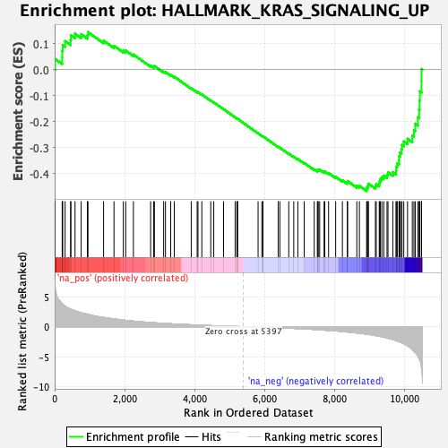
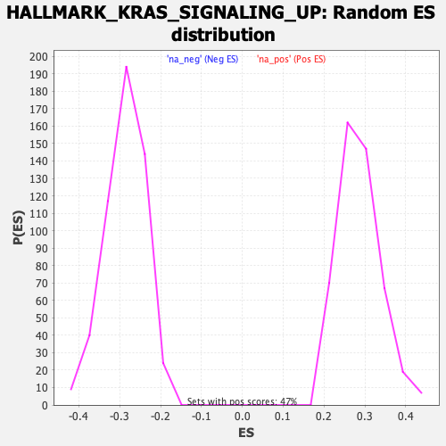

| Dataset | qlf.KOd4vsWTd4_gsea_score |
| Phenotype | NoPhenotypeAvailable |
| Upregulated in class | na_neg |
| GeneSet | HALLMARK_KRAS_SIGNALING_UP |
| Enrichment Score (ES) | -0.46593016 |
| Normalized Enrichment Score (NES) | -1.6298699 |
| Nominal p-value | 0.0 |
| FDR q-value | 0.02459485 |
| FWER p-Value | 0.065 |

| SYMBOL | RANK IN GENE LIST | RANK METRIC SCORE | RUNNING ES | CORE ENRICHMENT | |
|---|---|---|---|---|---|
| 1 | IRF8 | 13 | 6.580 | 0.0411 | No |
| 2 | NRP1 | 215 | 3.875 | 0.0468 | No |
| 3 | CCND2 | 217 | 3.831 | 0.0714 | No |
| 4 | PDCD1LG2 | 230 | 3.756 | 0.0944 | No |
| 5 | RGS16 | 299 | 3.419 | 0.1099 | No |
| 6 | TNFRSF1B | 456 | 2.930 | 0.1138 | No |
| 7 | IL10RA | 464 | 2.922 | 0.1319 | No |
| 8 | IL7R | 582 | 2.663 | 0.1379 | No |
| 9 | PSMB8 | 757 | 2.318 | 0.1361 | No |
| 10 | TSPAN13 | 935 | 2.080 | 0.1325 | No |
| 11 | RABGAP1L | 952 | 2.065 | 0.1443 | No |
| 12 | ANGPTL4 | 1398 | 1.544 | 0.1115 | No |
| 13 | PRDM1 | 1695 | 1.304 | 0.0915 | No |
| 14 | TRIB1 | 1962 | 1.105 | 0.0731 | No |
| 15 | ID2 | 2030 | 1.056 | 0.0734 | No |
| 16 | AMMECR1 | 2250 | 0.925 | 0.0584 | No |
| 17 | CBR4 | 2742 | 0.696 | 0.0157 | No |
| 18 | DUSP6 | 2831 | 0.658 | 0.0115 | No |
| 19 | CXCL10 | 2850 | 0.650 | 0.0140 | No |
| 20 | ETV4 | 3114 | 0.558 | -0.0077 | No |
| 21 | GYPC | 3166 | 0.537 | -0.0091 | No |
| 22 | CFB | 3316 | 0.486 | -0.0203 | No |
| 23 | PTCD2 | 3417 | 0.456 | -0.0269 | No |
| 24 | TFPI | 3902 | 0.317 | -0.0714 | No |
| 25 | ETV5 | 4071 | 0.270 | -0.0857 | No |
| 26 | YRDC | 4095 | 0.265 | -0.0863 | No |
| 27 | LIF | 4205 | 0.240 | -0.0952 | No |
| 28 | SCG5 | 4460 | 0.178 | -0.1184 | No |
| 29 | USP12 | 4546 | 0.156 | -0.1256 | No |
| 30 | CSF2RA | 4826 | 0.102 | -0.1517 | No |
| 31 | TOR1AIP2 | 5156 | 0.043 | -0.1830 | No |
| 32 | CBX8 | 5206 | 0.034 | -0.1875 | No |
| 33 | MMD | 5222 | 0.032 | -0.1887 | No |
| 34 | TRAF1 | 5225 | 0.031 | -0.1887 | No |
| 35 | STRN | 5812 | -0.066 | -0.2445 | No |
| 36 | BPGM | 5920 | -0.083 | -0.2543 | No |
| 37 | WDR33 | 5951 | -0.089 | -0.2566 | No |
| 38 | BIRC3 | 5952 | -0.089 | -0.2560 | No |
| 39 | LCP1 | 6386 | -0.174 | -0.2964 | No |
| 40 | FBXO4 | 6434 | -0.185 | -0.2998 | No |
| 41 | MTMR10 | 6688 | -0.247 | -0.3224 | No |
| 42 | IL2RG | 6831 | -0.282 | -0.3343 | No |
| 43 | ADAM17 | 6948 | -0.314 | -0.3434 | No |
| 44 | CDADC1 | 7129 | -0.366 | -0.3583 | No |
| 45 | PTBP2 | 7416 | -0.458 | -0.3828 | No |
| 46 | TNFAIP3 | 7505 | -0.494 | -0.3881 | No |
| 47 | CTSS | 7522 | -0.501 | -0.3864 | No |
| 48 | AVL9 | 7530 | -0.504 | -0.3838 | No |
| 49 | MMP10 | 7572 | -0.517 | -0.3844 | No |
| 50 | GADD45G | 7698 | -0.570 | -0.3927 | No |
| 51 | CXCR4 | 7717 | -0.577 | -0.3907 | No |
| 52 | GPNMB | 7826 | -0.622 | -0.3971 | No |
| 53 | CBL | 8029 | -0.704 | -0.4120 | No |
| 54 | ATG10 | 8221 | -0.801 | -0.4251 | No |
| 55 | KCNN4 | 8362 | -0.879 | -0.4329 | No |
| 56 | CAB39L | 8370 | -0.883 | -0.4279 | No |
| 57 | PPP1R15A | 8633 | -1.048 | -0.4463 | No |
| 58 | CCSER2 | 8707 | -1.093 | -0.4463 | No |
| 59 | FUCA1 | 8913 | -1.239 | -0.4580 | Yes |
| 60 | GLRX | 8928 | -1.256 | -0.4512 | Yes |
| 61 | LY96 | 8954 | -1.277 | -0.4454 | Yes |
| 62 | DNMBP | 8964 | -1.287 | -0.4380 | Yes |
| 63 | SDCCAG8 | 9164 | -1.473 | -0.4476 | Yes |
| 64 | ADAM8 | 9188 | -1.511 | -0.4401 | Yes |
| 65 | ITGB2 | 9274 | -1.590 | -0.4380 | Yes |
| 66 | GPRC5B | 9285 | -1.604 | -0.4286 | Yes |
| 67 | CROT | 9307 | -1.628 | -0.4201 | Yes |
| 68 | NIN | 9349 | -1.671 | -0.4133 | Yes |
| 69 | MAP3K1 | 9403 | -1.733 | -0.4072 | Yes |
| 70 | JUP | 9496 | -1.874 | -0.4040 | Yes |
| 71 | TMEM176A | 9524 | -1.909 | -0.3943 | Yes |
| 72 | TMEM176B | 9662 | -2.143 | -0.3936 | Yes |
| 73 | MAP4K1 | 9755 | -2.339 | -0.3874 | Yes |
| 74 | DOCK2 | 9760 | -2.351 | -0.3726 | Yes |
| 75 | VWA5A | 9789 | -2.405 | -0.3598 | Yes |
| 76 | MAP7 | 9839 | -2.492 | -0.3485 | Yes |
| 77 | AKT2 | 9842 | -2.507 | -0.3325 | Yes |
| 78 | F2RL1 | 9866 | -2.554 | -0.3183 | Yes |
| 79 | LAPTM5 | 9908 | -2.634 | -0.3053 | Yes |
| 80 | CD37 | 9923 | -2.696 | -0.2892 | Yes |
| 81 | IKZF1 | 9975 | -2.850 | -0.2758 | Yes |
| 82 | IL1RL2 | 10082 | -3.190 | -0.2654 | Yes |
| 83 | KIF5C | 10218 | -3.776 | -0.2540 | Yes |
| 84 | ST6GAL1 | 10265 | -4.109 | -0.2320 | Yes |
| 85 | PECAM1 | 10302 | -4.327 | -0.2076 | Yes |
| 86 | EMP1 | 10376 | -4.899 | -0.1830 | Yes |
| 87 | HSD11B1 | 10414 | -5.265 | -0.1527 | Yes |
| 88 | ETS1 | 10427 | -5.458 | -0.1187 | Yes |
| 89 | SATB1 | 10434 | -5.598 | -0.0832 | Yes |
| 90 | AKAP12 | 10481 | -6.918 | -0.0430 | Yes |
| 91 | TRIB2 | 10482 | -7.071 | 0.0025 | Yes |
